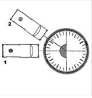
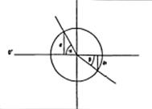

| Objetivo: |
Medir el ángulo de refracción en función del ángulo de incidencia, al pasar la luz de aire a agua y de aire a glicerina. Medir el ángulo de refracción en función del ángulo de incidencia, al pasar la luz de agua a glicerina. |
| Material |
|
|
| Introducción: |
| Ver introducción practica 43.
|
| Desarrollo Experimental: |
|
Atención: Cuida en todos los pasos del experimento, que el haz de luz estrecho de la caja luminosa (figura 1) vaya siempre exactamente al centro del disco óptico ("pie de la normal"), y que la cubeta no varíe su posición al mover la caja. Experimento 1:
Experimento 2:
|
| Resultados y Conclusiones: |
| Paso de la luz de aire a líquido. Ver Tabla 1Paso de la luz de agua a alcohol isopropílico. Ver Tabla 2
Con los resultados obtenidos: 1) Compara los ángulos δ y los correspondientes ángulos de refracción β de la tabla 1. ¿En cuál de los dos pasos se refracta más la luz?. 2) Ordena las tres sustancias agua, aire y alcohol isopropílico, según su densidad óptica. 3) Compara los ángulos de incidencia α con sus correspondientes de refracción β de la tabla 2. ¿Cómo se comportan los haces de luz estrechos al incidir oblicuamente sobre la superficie de separación aire- alcohol isopropílico?. 4) Intenta explicar el comportamiento observado del haz de luz estrecho en la superficie de separación aire-alcohol isopropílico.
Ejercicio complementario Calcula con los valores de la tabla 1 los índices de refracción del agua y el alcohol isopropílico: 1) Traza, como en la figura 2, un círculo con un radio de 5 cm. Dibuja todos los ángulos α y β de la tabla 1. Mide las semicuerdas a y b correspondientes. 2) Anota los valores en la tabla 3. 3) Calcuta todos los cocientes n = a/b, y las medias de nw y nGI (índices de refracción). 4) Calcula igualmente el índice de refracción relativo nw / nGI del paso agua-alcohol isopropílico (tabla 4). 5) Intenta encontrar una relación entre los índices de refracción nw y nGI y el índice de refracción relativo nw / nGI. Ver Figura 2 Ver Tabla 3 Ver Tabla 4 |
| Figura 1:1–ajusteFigura 1:2–primera medición |
|  |
| Figura 2: |
|  |